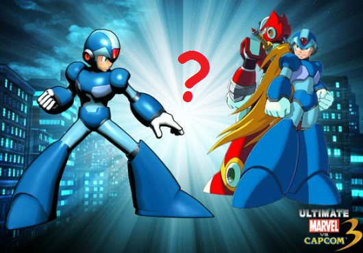

Why X may have been left out of Ultimate Marvel vs. Capcom 3

Megaman X, X2, X4, and Xtreme 2. What do these 4 X series titles have in common? I hold them as the pinnacle of the X series for various
reasons.
Stages
Stage design is by far the number one aspect that seperate the great Megaman X titles from the rest of the pack. In each of the games listed
above, the stages are well-designed; challenging enough to pose a threat to a new player, yet built smoothly enough that a veteran could speed
through it with finesse. A big problem that I've noticed in many of the X series titles is that the stage design isn't very smooth. This is
evident in elements such as levels being chunked into thirds (X3), Alia constantly interrupting you while stating the obvious (X5), awkwardly
bad level design that forces the player to restart the game or kill himself off (X6), and an overuse of gimmicks like autoscroll and Ride Chasers.
These factors go a long way into making the gameplay feel more tedious and forced as opposed to letting the player go at their own pace.
On the subject of Ride Armors/Chasers, they aren't inherently bad if done in moderation. Most X games have a Ride Armor that X/Zero can hop
into to for an alternate way to head through a stage if need be. The ability to fight Magma Dragoon in the Ride Armor was amazing, and
even the lava segment of X5 was a creative idea. Likewise Ride Chasers can be okay when done right as well; X2 let you take one of them for a
spin in Overdrive's stage for a segment. While making entire stages out of Ride Chaser levels is a less flexible option, making the stage short
and simple (i.e. Jet Stingray) gives the stage more of a feeling of a quick jaunt rather than a grueling experience. A bad example of this being
used can both be seen in X7 and X8. X8 in particular has not one but two stages fully devoted to Ride Chasers, and neither level is a
walk in the park. Seeing as the game additionally has autoscroll levels, you pretty much have to clear out these levels before you can start
having any real fun.
Armors, Items, and You
One thing that the X series is known for it the ability to collect items/armor and 'improve' throughout the game, allowing you to progress
easier thanks to you new upgrades. However, with this comes the danger of overloading the player with a large number of things to collect,
making the game feel more like a chore to go though. The primary area that you see this issue arise with is with the armor upgrades. Typically,
X collects 4 pieces of armor to complete it, gaining the ability to use that armor's upgrade as soon as it is acquired. This works quite well
as it gives the player an instant reward while motivating them to complete the rest of the armor.
However, in games such as X5 and X6, you not only have two armors to complete, but you now only get to see the benefits of collecting the armor
after you have all 4 pieces. This effectively makes it seem more like a chore to find said armors, even moreso in X5 where you absolutely need the
Falcon Armor to find the rest of the Gaea Armor. X8 takes a unique approach by letting you mix and match both armors as well as gain the benefits
immediately, but falls short due to the armors looking and feeling somewhat bland and uninspired.

 ~AquaTeamV3/Buster Cannon
~AquaTeamV3/Buster Cannon